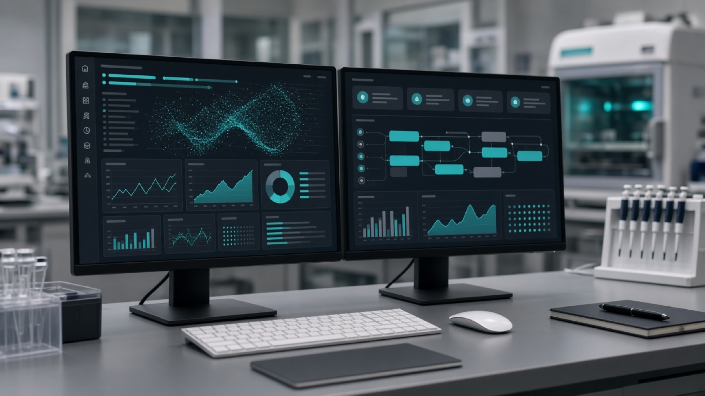
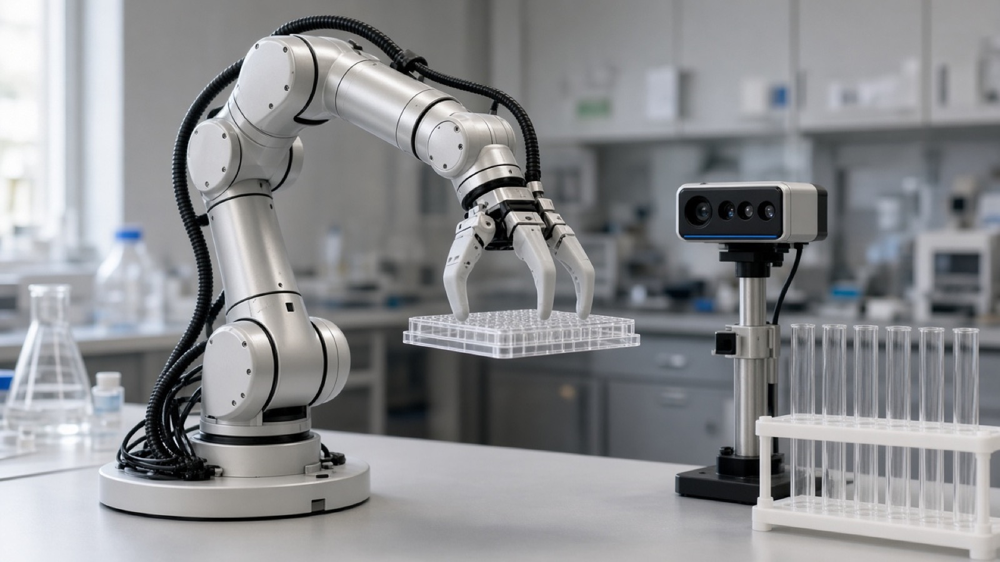

01
要件の切り分け
「何を自動化したいか」を、データ・手順・実機のどこから着手するかに分解します。
製品販売とは別に、御社の課題に合わせた開発・検証を請け負います。
「何を自動化したいか」を、データ・手順・実機のどこから着手するかに分解します。
モデル・パイプライン・ロボット連携を、デモや PoC で測れる形まで落とします。
必要に応じて、当社ラボでも同じ視点で手順や操作の検証を手伝います。
配列・構造・アッセイ結果を、次の実験判断につながるデータとモデルにします。

変異提案、性質予測、フィルタリング。探索空間を狭めつつ、根拠の残る設計フローを作ります。
プレートリーダー CSV やアッセイ結果の取り込み、Z-factor・ヒット選定、次ラウンド候補の提示まで。
出典つき手順検索やチェックの仕組みを、御社コーパス向けに合わせて構築します。
見て、掴んで、置き直す。失敗したら再観測してやり直す。ラボの実機操作をソフトウェアから扱える形にします。

RGB-D からの検出、6DoF、把持計画。失敗時の再観測を前提にしたループを設計します。
OT-2 級の液体処理、プレートリーダー、インキュベータなど、段階的に接続する構成を一緒に切ります。
承認済みプロトコルを実機へ渡し、実行ログを解析へ戻す。計算と実験のあいだを埋めます。
関連OSS: BioSpatial OS ／ 製品概要: 製品一覧
最初から大規模契約にする必要はありません。短い相談から始められます。
データ・手順・実機のどこがボトルネックか、いまある素材を確認します。
2〜4 週間で見える PoC 範囲に落とします。成功条件を先に決めます。
動くもの・測れるものを先に出します。必要なら自社ラボでも裏取りします。
続ける／止める／別の切り口に変えるを、実測ベースで決めます。